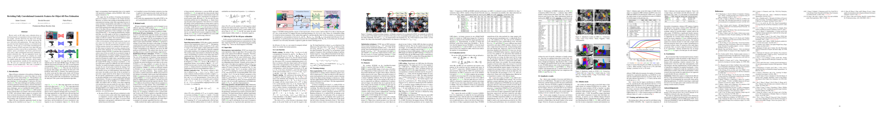

Bibliometrics
-

FreeZe: Training-free zero-shot 6D pose estimation with geometric and vision foundation models
Andrea Caraffa, Davide Boscaini, Amir Hamza, Fabio Poiesi
European Conference on Computer Vision (ECCV), 2024
Awards: An early version of this work won the "Best method on TUD-L dataset" award at the BOP Challenge 2023.
webpage arxiv BOP leaderboard -
Open-vocabulary object 6D pose estimation
Jaime Corsetti, Davide Boscaini, Changjae Oh, Andrea Cavallaro, Fabio Poiesi
Computer Vision and Pattern Recognition (CVPR), 2024 — Highlight poster (2.8% acceptance rate)
TL;DR: We introduce the new setting of open-vocabulary object 6D pose estimation, in which a textual prompt is used to specify the object of interest, instead of requiring its 3D model or a video footage capturing multiple viewpoints around the object.
webpage arxiv code
2024 papers
-
Detect, Augment, Compose, and Adapt: Four steps for unsupervised domain adaptation in object detection
Mohamed L. Mekhalfi, Davide Boscaini, Fabio Poiesi
British Machine Vision Conference (BMVC), 2023
arxiv code -
 Revisiting Fully Convolutional Geometric Features for object 6D pose estimation
Jaime Corsetti, Davide Boscaini, Fabio Poiesi
International Workshop on Recovering 6D Object Pose (R6D), 2023 — Held in conjunction with ICCV 2023
arxiv code -
PatchMixer: Rethinking network design to boost generalization for 3D point cloud understanding
Davide Boscaini, Fabio Poiesi
Image and Vision Computing (IMAVIS), 2023
TL;DR: We introduce a novel network design that demonstrates strong generalization performance across datasets unseen during training. PatchMixer achieves SOTA classification performance on the GraspNetPC dataset in the transfer learning setting
pdf arxiv code -

Supervised tractogram filtering using Geometric Deep Learning
Pietro Astolfi, Ruben Verhagen, Laurent Petit, Emanuele Olivetti, Silvio Sarubbo, Jonathan Masci, Davide Boscaini, Paolo Avesani
Medical Image Analysis (MIA), 2023
pdf arxiv -
The MONET dataset: Multimodal drone thermal dataset recorded in rural scenarios
Luigi Riz, Andrea Caraffa, Matteo Bortolon, Mohamed L. Mekhalfi, Davide Boscaini, André Moura, José Antunes, André Dias, Hugo Silva, Andreas Leonidou, Christos Constantinides, Christos Keleshis, Dante Abate, Fabio Poiesi
Multimodal Learning and Applications Workshop (MULA), 2023 — Held in conjunction with CVPR 2023
arxiv code -
Learning general and distinctive 3D local deep descriptors for point cloud registration
Fabio Poiesi, Davide Boscaini
Transactions on Pattern Analysis and Machine Intelligence (TPAMI), 2023
TL;DR: State-of-the-art performance for point cloud registration in the transfer learning setting across 3DMatch, ETH, and Kitti datasets
arxiv code
2023 papers
-
Localisation of defects in volumetric CT scans of valuable wood logs
Davide Boscaini, Fabio Poiesi, Stefano Messelodi, Ayman Younes, Donato A. Grande
International Workshop on Industrial Machine Learning (IML), 2020 — Held in conjunction with ICPR 2020, Oral presentation
pdf -
Joint supervised and self-supervised learning for 3D real-world challenges
Antonio Alliegro, Davide Boscaini, Tatiana Tommasi
International Conference on Pattern Recognition (ICPR), 2020 — Oral presentation (4.4% acceptance rate)
-
Distinctive 3D local deep descriptors
Fabio Poiesi, Davide Boscaini
International Conference on Pattern Recognition (ICPR), 2020
-
Shape consistent 2D keypoint estimation under domain shift
Levi O. Vasconcelos, Massimiliano Mancini, Davide Boscaini, Samuel Rota Bulò, Barbara Caputo, Elisa Ricci
International Conference on Pattern Recognition (ICPR), 2020
pdf arxiv -
Novel-view human action synthesis
Mohamed I. Lakhal, Davide Boscaini, Fabio Poiesi, Oswald Lanz, Andrea Cavallaro
Asian Conference on Computer Vision (ACCV), 2020
arxiv -
Clustered dynamic graph CNN for biometric 3D hand shape recognition
Jan Svoboda, Pietro Astolfi, Davide Boscaini, Jonathan Masci, Michael M. Bronstein
International Joint Conference on Biometrics (IJCB), 2020
pdf -
Tractogram filtering of anatomically non-plausible fibers with Geometric Deep Learning
Pietro Astolfi, Ruben Verhagen, Laurent Petit, E. Olivetti, Jonathan Masci, Davide Boscaini, Paolo Avesani
International Conference on Medical Image Computing and Computer Assisted Intervention (MICCAI), 2020 — First Geometric Deep Learning application to NeuroImaging tasks
arxiv -
Self-supervision for 3D real-world challenges
Antonio Alliegro, Davide Boscaini, Tatiana Tommasi
Multimodal Learning and Applications Workshop (MULA), 2020 — Held in conjunction with ECCV 2020
pdf -

Deciphering interaction fingerprints from protein molecular surfaces using Geometric Deep Learning
Pablo Gainza, Freyr Sverrisson, Federico Monti, Emanuele Rodolà, Davide Boscaini, Michael M. Bronstein, Bruno E. Correia
Nature Methods, 2020 — Advertised on the February 2020 cover
-
Learning interaction patterns from surface representations of protein structure
Pablo Gainza, Freyr Sverrisson, Federico Monti, Emanuele Rodolà, Davide Boscaini, Michael M. Bronstein, Bruno E. Correia
NeurIPS Workshop on Graph Representation Learning, 2019 — Held in conjunction with NeurIPS 2019
-

Structured domain adaptation for 3D keypoint estimation
Levi O. Vasconcelos, Massimiliano Mancini, Davide Boscaini, Barbara Caputo, Elisa Ricci
International Conference on 3D Vision (3DV), 2019 — Oral presentation
-

3D shape segmentation with Geometric Deep Learning
Davide Boscaini, Fabio Poiesi
International Conference on Image Analysis and Processing (ICIAP), 2019 — Spotlight presentation
arxiv -

Geometric deep learning on graphs and manifolds using mixture model CNNs
Federico Monti*, Davide Boscaini*, Jonathan Masci, Emanuele Rodolà, Jan Svoboda, Michael M. Bronstein (* denotes equal contibution)
Computer Vision and Pattern Recognition (CVPR), 2017 — Oral presentation (0.8% acceptance rate)
pdf arxiv -
Learning shape correspondence with anisotropic convolutional neural networks
Davide Boscaini, Jonathan Masci, Emanuele Rodolà, Michael M. Bronstein
Neural Information Processing Systems (NeurIPS), 2016
pdf arxiv code -

Anisotropic diffusion descriptors
Davide Boscaini, Jonathan Masci, Emanuele Rodolà, Michael M. Bronstein, Daniel Cremers
Computer Graphics Forum (CGF), 2016 — Oral presentation at Eurographics 2016
pdf -

Learning class-specific descriptors for deformable shapes using localized spectral convolutional networks
Davide Boscaini, Jonathan Masci, Simone Melzi, Michael M. Bronstein, Umberto Castellani, Pierre Vandergheynst
Computer Graphics Forum (CGF), 2015 — Oral presentation at SGP 2015
-

Geodesic convolutional neural networks on Riemannian manifolds
Jonathan Masci*, Davide Boscaini*, Michael M. Bronstein, Pierre Vandergheynst (* denotes equal contibution)
ICCV Workshop on 3D Representation and Recognition (3dRR), 2015 — Oral presentation
-

Shape-From-Operator: Recovering shapes from intrisic operators
Davide Boscaini, Davide Eynard, Drosos Kourounis, Michael M. Bronstein
Computer Graphics Forum (CGF), 2015 — Oral presentation at Eurographics 2015
-

Coulomb shapes: Using electrostatic forces for deformation-invariant shape representation
Davide Boscaini, Ramunas Girdziusaz, Michael M. Bronstein
Eurographics Workshop on 3D Object Retrieval (3DOR), 2014 — Oral presentation
-

A sparse coding approach for local-to-global 3D shape description
Davide Boscaini, Umberto Castellani
The Visual Computer (TVC), 2014
-
Local signature quantization by sparse coding
Davide Boscaini, Umberto Castellani
Eurographics Workshop on 3D Object Retrieval (3DOR), 2013 — Oral presentation